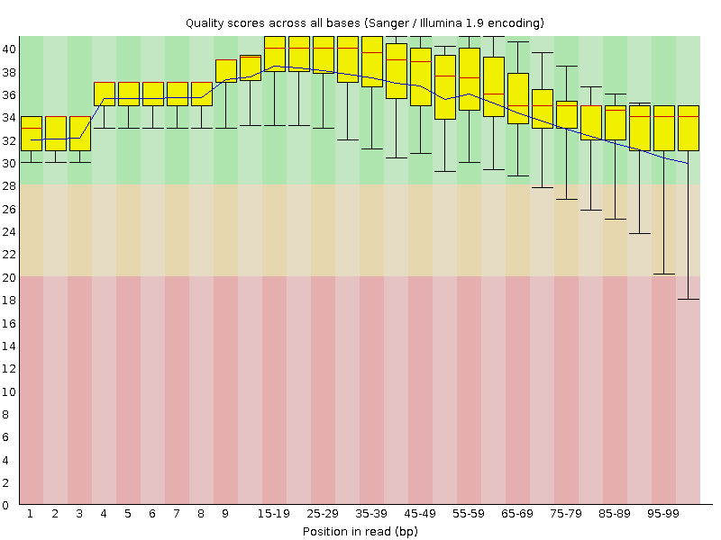
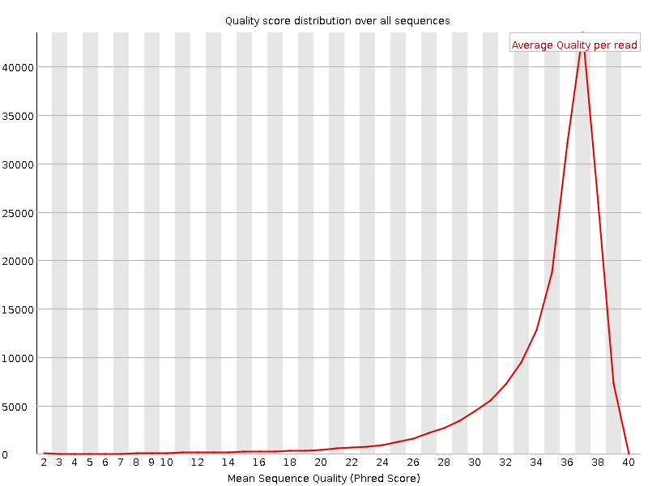
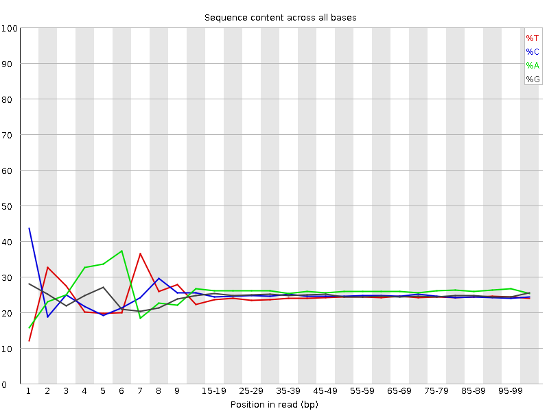
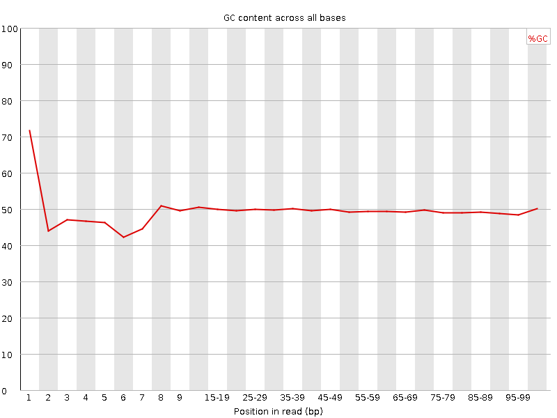
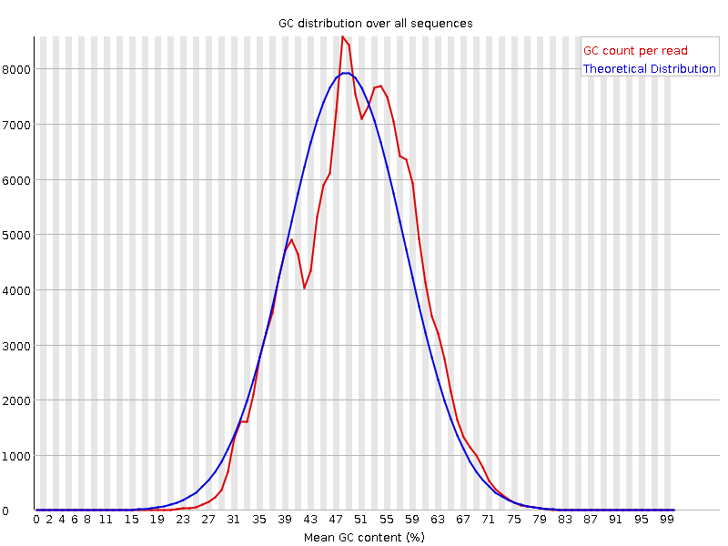
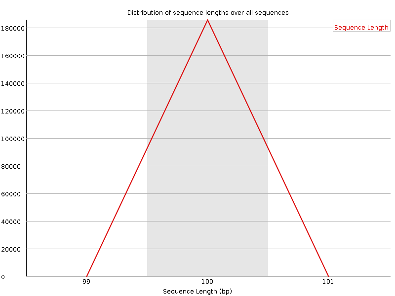
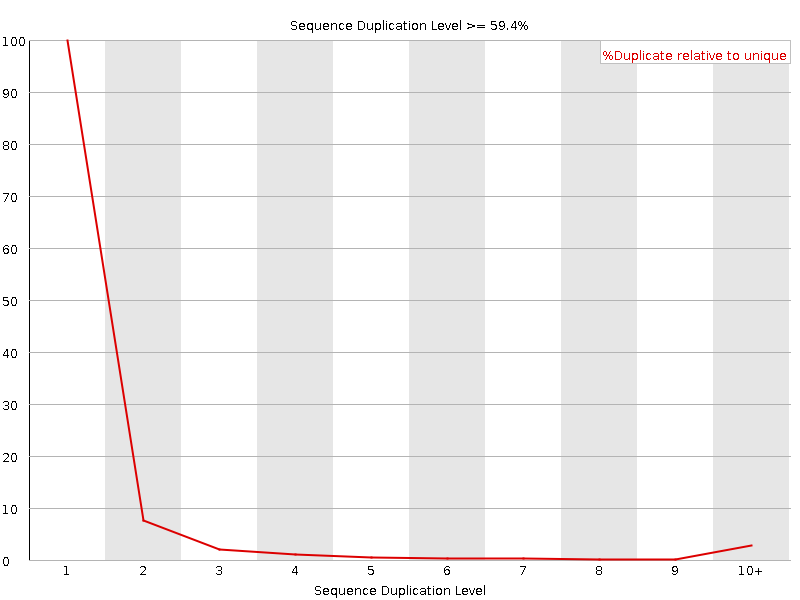
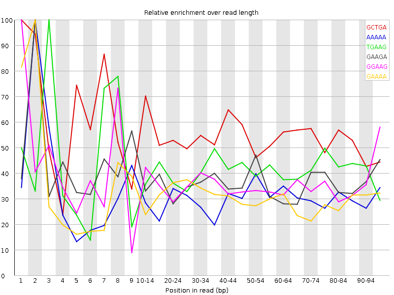

![[OK]](Icons/tick.png) Basic Statistics
Basic Statistics
| Measure | Value |
|---|---|
| Filename | Sample-B_Rep3.R2.fastq.gz |
| File type | Conventional base calls |
| Encoding | Sanger / Illumina 1.9 |
| Total Sequences | 185442 |
| Filtered Sequences | 0 |
| Sequence length | 100 |
| %GC | 49 |
Per base sequence quality

Per sequence quality scores

![[FAIL]](Icons/error.png) Per base sequence content
Per base sequence content

Per base GC content

![[WARN]](Icons/warning.png) Per sequence GC content
Per sequence GC content

Per base N content

Sequence Length Distribution

Sequence Duplication Levels

Overrepresented sequences
| Sequence | Count | Percentage | Possible Source |
|---|---|---|---|
| CTTCAATATAAGCCTTGGTAGGGATAGATAGCCACCTATATAGTATAGCT | 706 | 0.38071202855879466 | No Hit |
| CTCGTAACCAAACATGCACAGCGGTCAAACAGTATGTCCCAAGGGGACTT | 411 | 0.22163263985504902 | No Hit |
| CTTAGATATTTTAAAGAGGCATCTATCACATAAGGCATCATTATAACTAA | 375 | 0.20221956191154108 | No Hit |
| CCCTAACTTAATGGACGGGAGGTATCCCAATAGGAGGTTTCCTCCTATGG | 331 | 0.17849246664725357 | No Hit |
| CGAATAGCTCGTAACCAAACATGCACAGCGGTCAAACAGTATGTCCCAAG | 327 | 0.17633545798686381 | No Hit |
| CCTAACTTAATGGACGGGAGGTATCCCAATAGGAGGTTTCCTCCTATGGT | 306 | 0.1650111625198175 | No Hit |
| TGAAAATTCTATGGAAGAGCTAGCATCTCTGACGAAAACAGCAGACGGAA | 298 | 0.160697145199038 | No Hit |
| CAGCAATTGAAGTGAAGATGATTGACCGCACGCAATTGATATTAGATATT | 285 | 0.1536868670527712 | No Hit |
| CAAAAACGGAACAGGGCTGACGCCGCTACATATATAGGAAAAGGGAAGGT | 284 | 0.15314761488767376 | No Hit |
| CTTGAAGCTGATCTCCTCATCTTTAATGATGAACTGTCGCCAAGTCAGCT | 272 | 0.14667658890650445 | No Hit |
| CAGAAATCGCATTCATGAAATCAACACACAGCTTTCCACTGTCATTCGCC | 270 | 0.14559808457630957 | No Hit |
| CTCTCATTGGTTTATACTTCAATATAAGCCTTGGTAGGGATAGATAGCCA | 266 | 0.1434410759159198 | No Hit |
| CGAAACTGGAAACCGACCGCCGCCATATCAGAAATCGCATTCATGAAATC | 265 | 0.14290182375082236 | No Hit |
| CTAGCATCTCTGACGAAAACAGCAGACGGAAAAGTACTGACCAGCGTCAC | 264 | 0.1423625715857249 | No Hit |
| CCCAATTATCCATAAAACTGTAACTAAGTGAGGCTCTCTCATTGGTTTAT | 249 | 0.13427378910926327 | No Hit |
| GGCCGATTGTCGCAGCCCGGGTCGATTATAACAACGGTGCAATCTCAGCT | 218 | 0.11755697199124254 | No Hit |
| CTTCAAATTGCGCTTGTCGGCTATACAAACGCAGGGAAATCAACATGGTT | 217 | 0.1170177198261451 | No Hit |
| GGAAGAGCTAGCATCTCTGACGAAAACAGCAGACGGAAAAGTACTGACCA | 214 | 0.11539996333085277 | No Hit |
| CGCAGGGAAATCAACATGGTTCAACCGCCTGACGAGTGCTGACAGCTATG | 212 | 0.11432145900065788 | No Hit |
| TATAGATTGGCGCTAGTAGATCACAGAACAACCGCCGCATACGGCCGATT | 209 | 0.11270370250536556 | No Hit |
| CTCATCTTTAATGATGAACTGTCGCCAAGTCAGCTGAAGTCATTGGCAAC | 205 | 0.11054669384497579 | No Hit |
| GAAAAAACAGTGCTTCGGCTGCTTGAGGAGCTTGAAGCAGATGATATCCC | 199 | 0.10731118085439113 | No Hit |
| CATTAATTAGGGCTGAAAGCCCTAACTTAATGGACGGGAGGTATCCCAAT | 199 | 0.10731118085439113 | No Hit |
| CTAACTTAATGGACGGGAGGTATCCCAATAGGAGGTTTCCTCCTATGGTT | 191 | 0.10299716353361159 | No Hit |
| CTTCCATTTCCGCCCAAGCTGCTCACAGTATACGGGCGTCGGCATCCAGA | 189 | 0.1019186592034167 | No Hit |
| CCTCGATCCATCGCGTATAGGGACGCCCCCTGCTCGCGTTACTGCCAAGC | 189 | 0.1019186592034167 | No Hit |
| CAATTATCCATAAAACTGTAACTAAGTGAGGCTCTCTCATTGGTTTATAC | 187 | 0.10084015487322182 | No Hit |
Kmer Content

| Sequence | Count | Obs/Exp Overall | Obs/Exp Max | Max Obs/Exp Position |
|---|---|---|---|---|
| GCTGA | 47490 | 2.7623484 | 5.025604 | 1 |
| AAAAA | 55205 | 2.538282 | 8.298291 | 2 |
| TGAAG | 42800 | 2.3683822 | 5.684093 | 3 |
| GAAGA | 45140 | 2.3139868 | 6.3483143 | 2 |
| GGAAG | 39410 | 2.1331658 | 5.949673 | 1 |
| GAAAA | 41710 | 2.0249796 | 6.571567 | 2 |
| TTCAA | 34980 | 1.9700034 | 10.272359 | 2 |
| AATTG | 34740 | 1.9652939 | 6.3269296 | 5 |
| AAAAC | 39790 | 1.923108 | 5.683753 | 3 |
| CTTCT | 29315 | 1.8733288 | 5.337191 | 1 |
| CTCAG | 31550 | 1.8269432 | 6.2538524 | 1 |
| CTTCA | 30710 | 1.8180057 | 11.252526 | 1 |
| ATTGG | 29225 | 1.7457062 | 5.9064054 | 6 |
| ATTGA | 30825 | 1.7438167 | 5.1592994 | 6 |
| GTTTT | 24800 | 1.6348083 | 5.568872 | 1 |
| CCCAA | 29865 | 1.5948833 | 5.4855423 | 1 |
| ATATA | 29390 | 1.5746294 | 5.323393 | 6 |
| TATCC | 24895 | 1.4737626 | 5.086506 | 7 |
| CTTGG | 23365 | 1.4670697 | 5.424964 | 1 |
| CTTGA | 23550 | 1.4004157 | 5.451786 | 1 |
| AATAT | 26095 | 1.3980932 | 7.32931 | 5 |
| TAGAT | 23645 | 1.3376333 | 5.512304 | 3 |
| TCCAT | 19690 | 1.1656312 | 5.2001715 | 7 |
| GATTG | 18905 | 1.1292584 | 5.9064054 | 5 |
| CAATA | 21075 | 1.0995274 | 5.0335445 | 4 |
| TATAA | 20295 | 1.0873462 | 6.5836973 | 7 |
| ATAAG | 18255 | 0.95668924 | 5.0814953 | 8 |
| CTCGT | 14010 | 0.87573457 | 5.310642 | 1 |
| TCAAT | 13680 | 0.77043 | 5.6227636 | 3 |